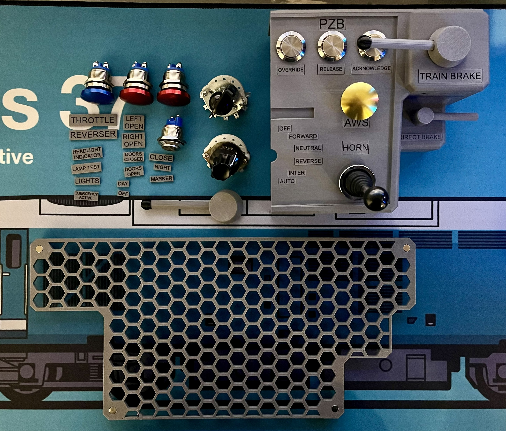
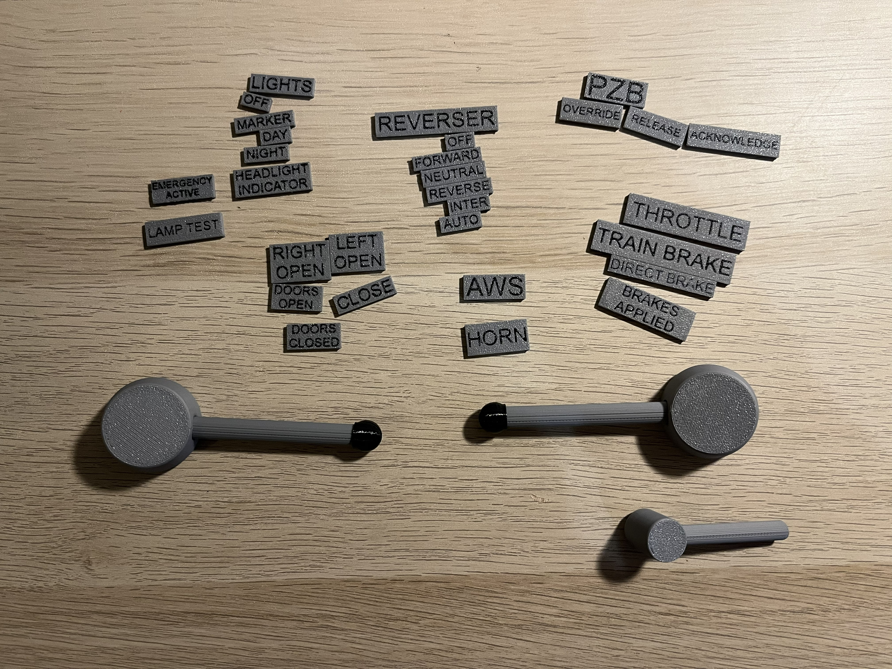
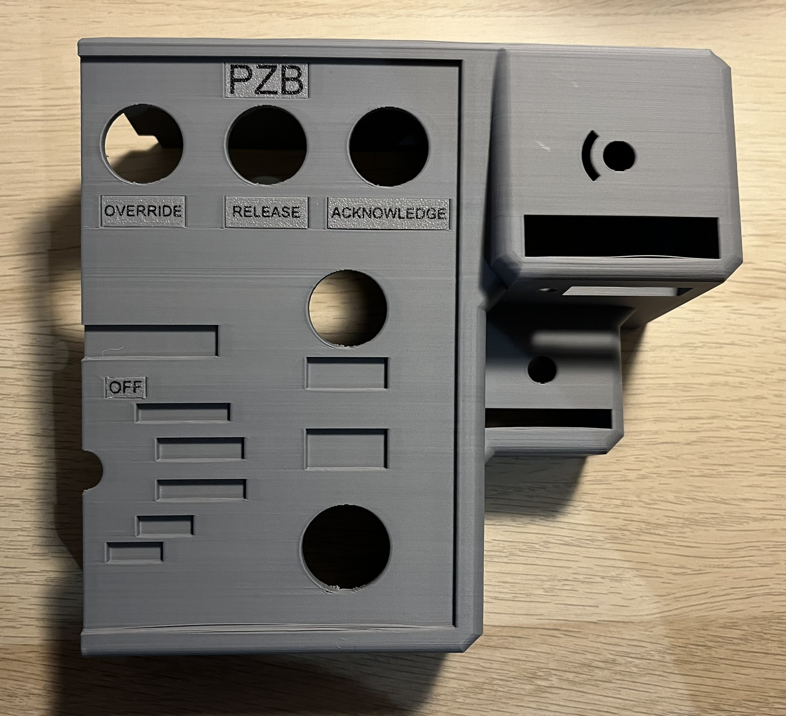

TSW Project

I wanted to create my very own game controller for a game that I really enjoy playing.
I have seen a design made by a company however that design was of an American style train and I wanted something typical of a European style train.
I spent a lot of time researching and designing the controller to ensure it would meet my needs and preferences.
Design and Build Process
I designed the controller on Fusion 360, typical of my other projects. I took designs from various sources and combined them to create a unique controller that would suit my preferences.
i had to design the controller from scratch around the components I was using to make sure that everything would fit together properly.
I used my 3D printer to create the physical components of the controller.
I used a teensy 4.1 microcontroller to handle the input and output functionality.
After assembling the controller came the coding...
Here are some photos of the design and build process:




Coding and Testing
The coding stage was very much a learning experience and challenge as Train Sim World doesn't support the controller features easily
Instead of programming the microcontroller to emulate a standard controller, I had to program it as a keyboard and modify how each button is mapped.
After many iterations and hours of testing, I was able to get the controller working as intended, providing a unique and immersive gaming experience.
There are still bits to calibrate and wire up to make the project fully functional and exactly what I envisioned.